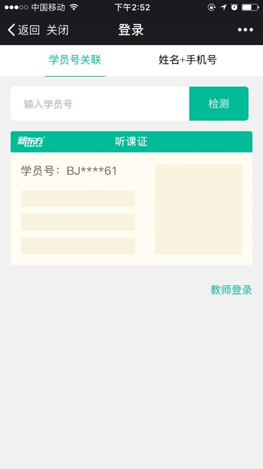
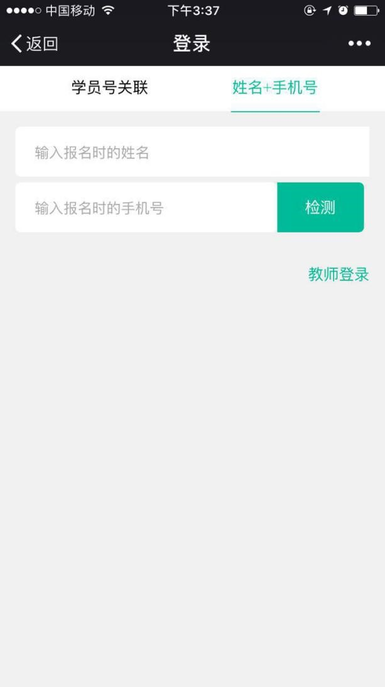
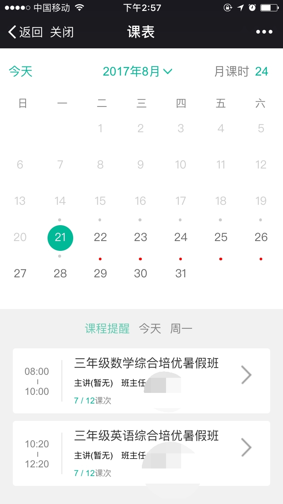

1.账号登录
1.1进入账号登录页
新用户首次登陆需要关注新东方邯郸学校微服务公众号，关注公众号后进入功能列表页面，点击【我的】按钮，弹出一个列表，点击【账户】按钮，进入登录页面。
1.2学员号登录页
学员号登录：输入学员号，点击【检测】按钮会弹出一个学员信息框，核对后点击【立即关联】按钮，就会弹出“绑定成功”的提示信息之后就会跳转到课表页面。
1.3手机号登录页
手机号登录：输入报名时的手机号和报名时的姓名，点击【检测】按钮就会弹出一个学员信息框，核对后点击【立即关联】按钮，就会弹出“绑定成功”的提示信息之后就会跳转到课表页面。
2.课表
2.1进入课表功能页
没有登录的学员，登录后直接跳转到课表功能页面，已经登录的学员，进入到双师东方公众号功能列表页面，点击【我的】按钮，弹出一个列表，点击【课表】按钮，进入到课表页面。
2.2课表功能介绍
课表可以查看上课时间、课时、地点以及老师，日历上有课的日期会用小圆点标识，已经过去的日期，小圆点为灰色展示，没有过去的日期，小圆点为红色展示。当天日期如果有课的，下方会有课程提醒展示，点击课程提醒下每节课后边的【>】进入到课程详情页面，可以查看班级名称、班号、时间、教室、课时、课堂老师、课堂同学。点击课堂同学后【>】按钮可以查看课堂同学全部列表。
进入学情功能页
学情进入，学员已经登录的，进入到公众号双师东方列表页面，点击【学情】按钮，进入到学情功能页面，没有登录的点击【学情】按钮会跳转到登录页面，登录后退出到双师东方功能列表页面，再次点击【学情】按钮进入到学情功能页面
入门测学情功能介绍
进入到入门测学情页面默认为趋势图展示页面，当点击【报表】按钮就会跳转到报表页面，同样再次点击【趋势图】按钮时就会跳转到趋势图页面。
趋势图页面点击折线图上的小圆圈就会弹出一个列表，展示该课次的日期、得分、该课次的班级平均分及该课次的满分。
报表页面展示课次、得分及平均分（对应课次的班级平均分）
出门测学情功能介绍
进入到出门测学情页面默认为趋势图展示页面，当点击【报表】按钮就会跳转到报表页面，同样再次点击【趋势图】按钮时就会跳转到趋势图页面。
趋势图页面点击折线图上的小圆圈就会弹出一个列表，展示该课次的日期、得分、该课次的班级平均分及该课次的满分。
报表页面展示课次、得分及平均分（对应课次的班级平均分）